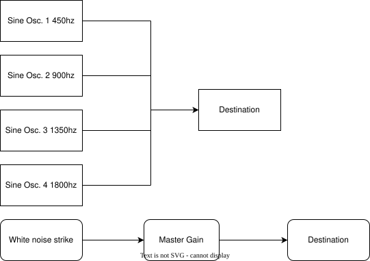

Brown noise through a resonant high-pass filter, modulated for a flowing water texture.
🔔
Part 2: Telephone Bell
Additive sine partials with a percussive noise strike and exponential decay envelope.
Part 3: Blog Post
For this assignment, I aimed to recreate the sound of a classic telephone bell that has a bright percussive strike and a long ringing decay. The goal was to simulate the timbre, attack, and decay of a real bell using WebAudio API nodes.
Signal Flow

Key Parts of the Code
Partials / OscillatorsFour sine-wave oscillators model the bell's partials: 450 Hz (fundamental), 900 Hz, 1350 Hz, and 1800 Hz. Each partial is slightly detuned with a tiny random start offset to prevent a perfectly harmonic pluck and add the metallic shimmer typical of bells.
Master Gain / EnvelopeA GainNode controls overall amplitude with an exponential decay over ~3 seconds, simulating the natural ringing of a bell.
Strike / Mallet SimulationA short 20 ms burst of white noise at the start simulates the mallet hitting the bell. Amplitude is kept low and the gain decays very fast, adding a percussive attack without clipping.
Synthesis Techniques and Choices
Additive SynthesisThe bell's tone is defined by its partials. Multiple sine oscillators — each representing a partial — give fine control over frequency and amplitude.
Envelope ShapingThe master gain shapes overall amplitude over time, creating a realistic exponential decay that mimics a ringing bell.
Noise Synthesis for PercussionA short white-noise burst simulates the initial strike. Controlling its amplitude and duration creates a percussive attack without harsh artifacts.
Detune / Timing OffsetsSmall detuning and random offsets between partials break perfect harmonic alignment, producing the metallic shimmer of a real bell.